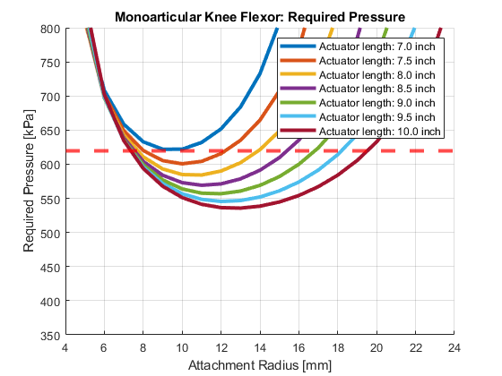
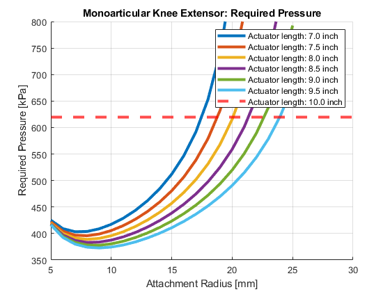
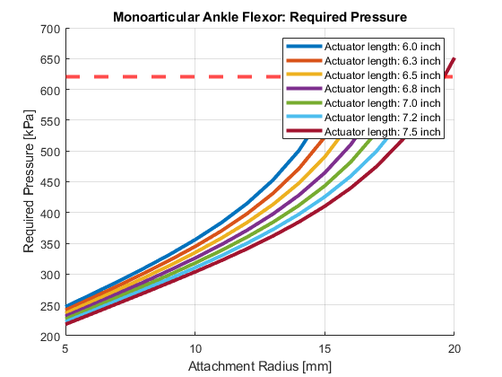
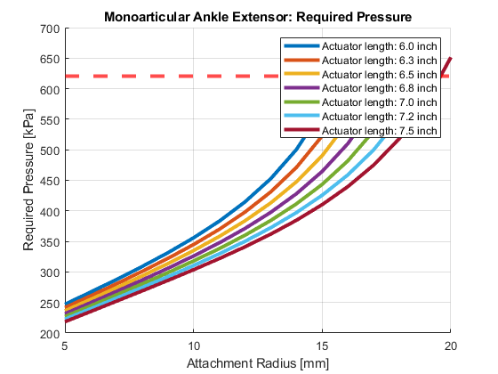

Contents
- Monoarticular static analysis
- Define geometric and physical constants
- Computing static force requirements
- Plot relationship between necessary knee flexor actuator pressure and attachment radii, varying actuator lengths
- Plot relationship between necessary knee extensor actuator pressure and attachment radii, varying actuator lengths
- Plot relationship between necessary ankle flexor actuator pressure and attachment radii, varying actuator lengths
- Plot relationship between necessary ankle extensor actuator pressure and attachment radii, varying actuator lengths
Monoarticular static analysis
% For quadruped robot hind legs clear, close('all'), clc
Define geometric and physical constants
% Defining hind leg section lengths l1 = 8.625 * (0.0254); % [m] Limb length 1 (inches to meters conversion) l2 = 8.625 * (0.0254); % [m] Limb length 2 (inches to meters conversion) l3 = 6.5 * (0.0254); % [m] Limb length 3 (inches to meters conversion) % Define gravitational constant g = 9.8; % [m/s^2] % Define length of actuators L_AF = (6:0.25:7.5) * (0.0254); % [m] Ankle flexor length (inches to meters conversion) L_AE = (6:0.25:7.5) * (0.0254); % [m] Ankle extensor length (inches to meters conversion) L_KF = (7:0.5:10) * (0.0254); % [m] Knee flexor length (inches to meters conversion) L_KE = (7.5:0.5:10) * (0.0254); % [m] Knee extensor length (inches to meters conversion) % Define actuator masses based on linear density estimate of 1.698 kg/m m_AF = 1.698 * L_AF; % [kg] Ankle flexor mass m_AE = 1.698 * L_AE; % [kg] Ankle extensor mass m_KF = 1.698 * L_KF; % [kg] Knee flexor mass m_KE = 1.698 * L_KE; % [kg] Knee extensor mass % Define mass values of the hind leg sections me = 0.0205; % [kg] Mass of encoders m1 = 0.1302; % [kg] Section 1 leg mass m2 = 0.1302; % [kg] Section 2 leg mass m3 = 0.09814; % [kg] Section 2 leg mass % Define maximum actuator strain estimate k_max = 0.1667; % [-] % Define range of attachment radii r_KF = 0.005:0.001:0.06; % [m] Knee flexor (5mm to 6cm range) r_KE = 0.005:0.001:0.06; % [m] Knee extensor (5mm to 6cm range) r_AF = 0.005:0.001:0.06; % [m] Ankle flexor (5mm to 6cm range) r_AE = 0.005:0.001:0.06; % [m] Ankle extensor (5mm to 6cm range) % Define the safety factor of required force SF = 1.6; % [-] %Define BPA model constants (eq 4 from paper) a0 = 254.3e3; % [Pa] Model Parameter 0 a1 = 192e3; % [Pa] Model Parameter 1 a2 = 2.0265; % [-] Model Parameter 2 a3 = -0.461; % [-] Model Parameter 3 a4 = -0.331e-3; % [1/N] Model Parameter 4 a5 = 1.23e3; % [Pa/N] Model Parameter 5 a6 = 15.6e3; % [Pa] Model Parameter 6 % Define the hysteresis factor S = 1; % [0,1]
Computing static force requirements
% Knee flexor: Compute torque from gravity at a maximally flexed position T_KF_leg = (l2/2) * (m2 + m_AE + m_AF) * g; % [Nm] Torque from tibia frame and lower limb actuators T_KF_ankle = (l2 + l3/2) * m3 * g; % [Nm] Torque from ankle, at extended position T__KF_encoder = l2 * me * g; % [Nm] Torque from encoder at ankle Tg_KF = T_KF_leg + T_KF_ankle + T__KF_encoder; % [Nm] Total torque on knee from gravity % Knee extensor: Compute torque from gravity at a maximally extended position T_KE_leg = (l2/2) * (m2 + m_AE + m_AF) * g * cosd(60); % [Nm] Torque from tibia frame and lower limb actuators T_KE_ankle = (l2 + l3 * cosd(60)/2) * m3 * g * cosd(60); % [Nm] Torque from foot, at extended position T_KE_encoder = l2 * me * g * cosd(60); % [Nm] Torque from encoder at ankle Tg_KE = T_KE_leg + T_KE_ankle + T_KE_encoder; % [Nm] Total torque on knee from gravity % Ankle flexor: Compute torque from gravity at a maximally flexed position Tg_AE = (l3 / 2) * (m3) * g; % [Nm] Torque from flexed ankle position % Ankle extensor: Compute torque from gravity at a maximally extended position Tg_AF = (l3 / 2) * (m3) * g; % [Nm] Torque from extended ankle position
Plot relationship between necessary knee flexor actuator pressure and attachment radii, varying actuator lengths
% Preallocating an array for plot legend key_KF = strings(1,length(L_KF)); % Setup the plot fig = figure('Color', 'w'); hold on, grid on, xlabel('Attachment Radius [mm]'), ylabel('Required Pressure [kPa]'), title('Monoarticular Knee Flexor: Required Pressure'), ylim([350 800]) % Plot the pressure required to resist gravity vs muscle attachment radii for each resting muscle length for n = 1:length(L_KF) % Iterate through each resting muscle length % Compute muscle strain at max flexion k_KF = (r_KF * pi() / 2) ./ L_KF(n); % [-] Knee flexor strain % Remove strains that exceed max strain k_KF(k_KF > k_max) = []; % [-] Knee flexor strain updated % Compute necessary force for each actuator to resist gravity F_KF = SF * (Tg_KF(n) ./ r_KF); % [N] Knee flexor actuator force % Compute necessary pressure to hold flexed position for each actuator P_KF = a0 + (a1 * tan( a2 * (( k_KF ./ (a4 * F_KF(1:length(k_KF)) + k_max)) + a3))) + (a5 * F_KF(1:length(k_KF))) + (a6 * S); % [Pa] % Plot attachment radius vs required pressure to achieve static % requirements in appropriate units for each actuator and add legend % entry for varying actuator curves figure(1) % Knee flexor plot plot((r_KF(1:length(k_KF))*1000), (P_KF/1000), '-', 'LineWidth', 3) key_KF(n) = sprintf('Actuator length: %.1f inch', (L_KF(n)/0.0254)); end % Add a line on the plot representing max pressure available yline(620, '--r', 'LineWidth', 3); % Add the legend % Knee flexor plot legend(key_KF)

Plot relationship between necessary knee extensor actuator pressure and attachment radii, varying actuator lengths
% Preallocating an array for plot legend key_KE = strings(1,length(L_KE)); % Setup the plot fig = figure('Color', 'w'); hold on, grid on, xlabel('Attachment Radius [mm]'), ylabel('Required Pressure [kPa]'), title('Monoarticular Knee Extensor: Required Pressure'), ylim([350 800]) % Plot the pressure required to resist gravity vs muscle attachment radii for each resting muscle length for n = 1:length(L_KE) % Iterate through each resting muscle length % Compute muscle strain at max flexion k_KE = (r_KE * pi()/2) ./ L_KE(n); % [-] Knee flexor strain % Remove strains that exceed max strain k_KE(k_KE > k_max) = []; % [-] Knee flexor strain updated % Compute necessary force for each actuator to resist gravity F_KE = SF * (Tg_KE(n) ./ r_KE); % [N] Knee flexor actuator force % Compute necessary pressure to hold flexed position for each actuator P_KE = a0 + (a1 * tan( a2 * (( k_KE ./ (a4 * F_KE(1:length(k_KE)) + k_max)) + a3))) + (a5 * F_KE(1:length(k_KE))) + (a6 * S); % [Pa] % Plot attachment radius vs required pressure to achieve static % requirements in appropriate units for each actuator and add legend % entry for varying actuator curves figure(2) % Knee flexor plot plot((r_KE(1:length(k_KE))*1000), (P_KE/1000), '-', 'LineWidth', 3) key_KE(n) = sprintf('Actuator length: %.1f inch', (L_KE(n)/0.0254)); end % Add a line on the plot representing max pressure available figure(2) % Knee flexor plot yline(620, '--r', 'LineWidth', 3); % Add the legend figure(2) % Knee flexor plot legend(key_KF)

Plot relationship between necessary ankle flexor actuator pressure and attachment radii, varying actuator lengths
Preallocating an array for plot legend
key_AF = strings(1,length(L_AF)); % Setup the plot fig = figure('Color', 'w'); hold on, grid on, xlabel('Attachment Radius [mm]'), ylabel('Required Pressure [kPa]'), title('Monoarticular Ankle Flexor: Required Pressure') % Plot the pressure required to resist gravity vs muscle attachment radii for each resting muscle length for n = 1:length(L_AF) % Iterate through each resting muscle length % Compute muscle strain at max flexion k_AF = (r_AF * pi()/2) ./ L_AF(n); % [-] Ankle extensotr strain % Remove strains that exceed max strain k_AF(k_AF > k_max) = []; % [-] Ankle extensor strain updated % Compute necessary force for each actuator to resist gravity F_AF = SF * (Tg_AF ./ r_AF); % [N] Ankle extensor actuator force % Compute necessary pressure to hold flexed position for each actuator P_AF = a0 + (a1 * tan( a2 * (( k_AF ./ (a4 * F_AF(1:length(k_AF)) + k_max)) + a3))) + (a5 * F_AF(1:length(k_AF))) + (a6 * S); % [Pa] % Plot attachment radius vs required pressure to achieve static % requirements in appropriate units for each actuator and add legend % entry for varying actuator curves figure(3) % Ankle extensor plot plot((r_AF(1:length(k_AF))*1000), (P_AF/1000), '-', 'LineWidth', 3) key_AF(n) = sprintf('Actuator length: %.1f inch', (L_AF(n)/0.0254)); end % Add a line on the plot representing max pressure available yline(620, '--r', 'LineWidth', 3); % Add the legend legend(key_AF)

Plot relationship between necessary ankle extensor actuator pressure and attachment radii, varying actuator lengths
Preallocating an array for plot legend
key_AE = strings(1,length(L_AE)); % Setup the plot fig = figure('Color', 'w'); hold on, grid on, xlabel('Attachment Radius [mm]'), ylabel('Required Pressure [kPa]'), title('Monoarticular Ankle Extensor: Required Pressure') % Plot the pressure required to resist gravity vs muscle attachment radii for each resting muscle length for n = 1:length(L_AE) % Iterate through each resting muscle length % Compute muscle strain at max flexion k_AE = (r_AE * pi()/2) ./ L_AE(n); % [-] Ankle extensotr strain % Remove strains that exceed max strain k_AE(k_AE > k_max) = []; % [-] Ankle extensor strain updated % Compute necessary force for each actuator to resist gravity F_AE = SF * (Tg_AE ./ r_AE); % [N] Ankle extensor actuator force % Compute necessary pressure to hold flexed position for each actuator P_AE = a0 + (a1 * tan( a2 * (( k_AE ./ (a4 * F_AE(1:length(k_AE)) + k_max)) + a3))) + (a5 * F_AE(1:length(k_AE))) + (a6 * S); % [Pa] % Plot attachment radius vs required pressure to achieve static % requirements in appropriate units for each actuator and add legend % entry for varying actuator curves figure(4) % Ankle extensor plot plot((r_AE(1:length(k_AE))*1000), (P_AE/1000), '-', 'LineWidth', 3) key_AE(n) = sprintf('Actuator length: %.1f inch', (L_AE(n)/0.0254)); end % Add a line on the plot representing max pressure available yline(620, '--r', 'LineWidth', 3); % Add the legend legend(key_AE)
